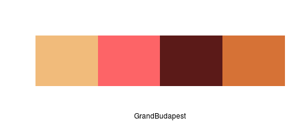
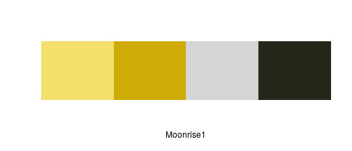
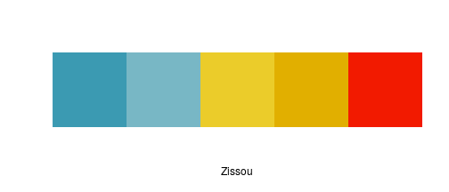
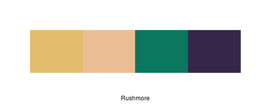
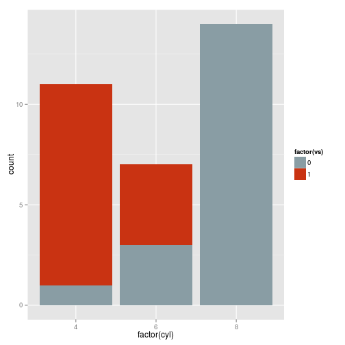
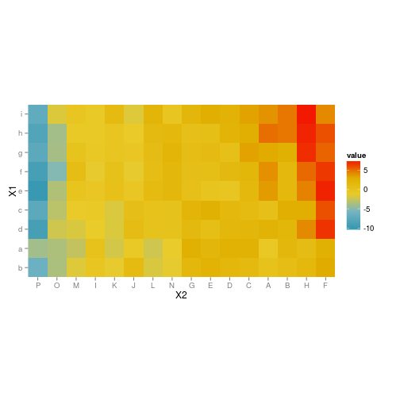

Värit
Color brewer
Cindy Brewer: helping you choose better color scales for maps
library(RColorBrewer)
display.brewer.all()

library(ggplot2)
mtcars$brands <- row.names(mtcars)
df <- mtcars[1:10,]
plot <- ggplot(df, aes(x=brands,y=cyl,fill=factor(carb)))
plot <- plot + geom_bar(stat="identity")
plot <- plot + scale_fill_brewer(palette="Set1")
plot

library(ggplot2)
mtcars$brands <- row.names(mtcars)
df <- mtcars[1:8,]
plot <- ggplot(df, aes(x=hp,y=qsec,color=brands,label=brands))
plot <- plot + geom_point()
plot <- plot + geom_text(family = "Gentium", hjust=-.1)
plot <- plot + scale_color_brewer(palette="Dark2")
plot <- plot + theme(legend.position = "none")
plot

WesAnderson paletters
library(knitr)
library(wesanderson)
kable(namelist)
| movies | wesnums |
|---|---|
| GrandBudapest | 4 |
| Moonrise1 | 4 |
| Royal1 | 4 |
| Moonrise2 | 4 |
| Cavalcanti | 5 |
| Royal2 | 5 |
| GrandBudapest2 | 4 |
| Moonrise3 | 5 |
| Chevalier | 4 |
| Zissou | 5 |
| FantasticFox | 5 |
| Darjeeling | 5 |
| Rushmore | 5 |
display.wes.palette(4, "GrandBudapest")

display.wes.palette(4, "GrandBudapest2")

display.wes.palette(4, "Moonrise1")

display.wes.palette(4, "Moonrise2")

display.wes.palette(5, "Moonrise3")

display.wes.palette(4, "Royal1")

display.wes.palette(5, "Royal2")

display.wes.palette(4, "Chevalier")

display.wes.palette(5, "Cavalcanti")

display.wes.palette(5, "Zissou")

display.wes.palette(5, "Darjeeling")

#display.wes.palette(5, "Darjeeling2")
display.wes.palette(4, "FantasticFox")

display.wes.palette(4, "Rushmore")

ggplot(iris, aes(Sepal.Length, Sepal.Width, color = Species)) +
geom_point(size = 3) +
scale_color_manual(values = wes.palette(3, "GrandBudapest")) +
theme_gray()

qplot(factor(cyl), data=mtcars, geom="bar", fill=factor(vs)) +
scale_fill_manual(values = wes.palette(2, "Royal1"))

library(wesanderson)
pal <- wes.palette(name = "Zissou", type = "continuous")
# heatmap is a local dataset
ggplot(heatmap, aes(x = X2, y = X1, fill = value)) +
geom_tile() +
scale_fill_gradientn(colours = pal(100)) +
scale_x_discrete(expand = c(0, 0)) +
scale_y_discrete(expand = c(0, 0)) + coord_equal()
